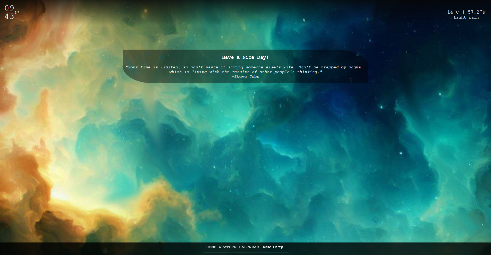

Let's call it "Life Tracker" or "Lifestyle Dashboard." Mylifedash aims to simplify users' lives by tracking their lifestyle. The website functions as a comprehensive dashboard, providing a range of features including financial statements, career and personal life achievement tracking, and a chill zone for relaxation. While the current version of the website offers only a fraction of its intended functionality, it does provide a three-day weather forecast obtained from an API. The weather information includes selected details, but it is important to note that, based on tests and observations, there is a 15% margin of error. In future versions, this margin of error will be addressed and the design will be simplified.
The initial version of the website was developed using HTML, CSS, and JavaScript as the core programming languages. The main functionality of fetching weather forecasts was implemented through API integration. To enhance the user experience and mimic an application-like behavior, the web application utilized separate HTML pages for each function while maintaining a unified styling and JavaScript page for the entire project. This approach allowed for code reusability and adhered to the principles of clean code by promoting modularization and organization. By writing the code once and leveraging it across multiple functions, the development process was optimized, reducing redundancy and enhancing maintainability. The use of consistent styling and JavaScript code throughout the website ensured a cohesive and unified user interface.
As a stylistic principle, the project employed shorthand lines for code efficiency. Default classes such as "fullscreen," "layout," or "border settings" were defined at the top of the file, allowing for consistent application across various elements. This approach facilitated quick and consistent styling without excessive repetition. For the layout, the project utilized the flexbox model for the header and grid layout for sections like the weather forecast section. Flexbox provided flexibility in positioning and aligning elements within the header, while grid layout enabled a structured presentation of content within the weather forecast section. Initially, a slideshow was planned for the hourly forecast, but to streamline the development process and minimize the amount of JavaScript code required, the decision was made to leverage the CSS overflow property. By applying the appropriate overflow settings, the desired behavior for the hourly forecast section could be achieved without the need for extensive JavaScript implementation.
To enhance code clarity and maintainability, variables are consistently declared using
the const keyword to ensure their immutability. This approach helps avoid accidental
reassignments and promotes better code reliability. Furthermore, adhering to clean code
principles, all variables are declared at the top of the file, thoughtfully organized
under descriptive comments that explain their purpose. For instance, variables related
to the clock function are grouped between two "// CLOCK" comments, facilitating easy
reference for developers working on the project.
By following this approach, the project promotes code reusability, readability,
and maintainability. The decision to keep variable names constant and logically
organized reduces the likelihood of naming conflicts and streamlines the development
process. The combination of efficient JavaScript usage, adherence to clean code
practices, and focus on essential functionalities ensures that the web application
performs optimally and delivers a seamless user experience.
In the coming months, I am enthusiastic about undertaking a complete rewrite
of the project's frontend using ReactJS. This revamp will encompass introducing
new features and an enhanced design, with the overarching goal of elevating the
website's quality and user experience.
To ensure scalability and flexibility, I plan to adopt a non-relational
database like Atlas as the backend database solution. This choice will
enable efficient handling of data and facilitate seamless integration with ReactJS.
By leveraging the power of ReactJS and implementing an advanced database
solution, I am committed to delivering a more robust, responsive, and
user-friendly website. This ambitious overhaul aims to elevate the overall
quality and usability of the platform, providing users with a more enjoyable
and intuitive experience.